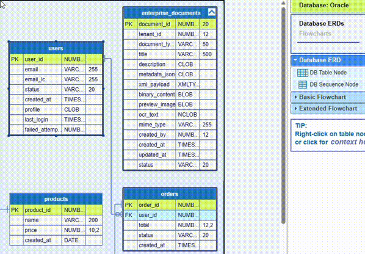
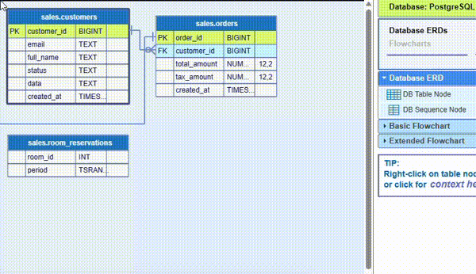
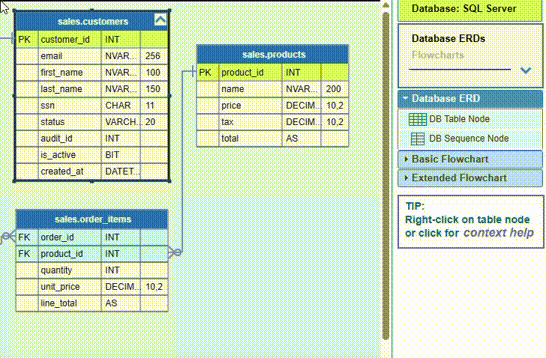

Database index is an optional structure, associated with a column or group of columns on a table, that can speed up the access to the data. Indexes are data structures that hold copies of specific table columns sorted for rapid lookups. Internally these structures are implemented most often as either B-Trees, Hash Indexes, or Bitmaps.
Most often indexes are defines in SQL explicitly by CREATE INDEX statements, however some constraints, like PRIMARY KEY and UNIQUE, implicitly create internal index structures.
Since this is a complex topic, you can look up for some brief information at:
https://www.thedataschool.co.uk/aronas-zilys/untitled-202/
or at any of the multiple internet sources, before digging into database documentation.
The implementation of indexes varies in different databases. However, JDElite Data Modeler has a standardized representation for indexes in the DB Table Editor subtable Indexes, which is enabled at table level. You can specify one or more indexes per table, entering your data in all or some of the fields:
Here are a few examples:
Oracle:

PostgreSQL:

SQL Server:
